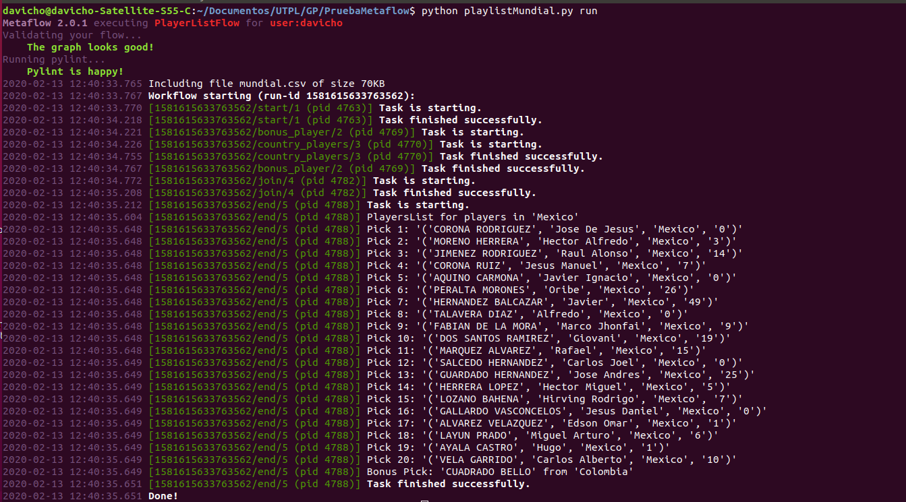

En este ejemplo se cargara un archivo CSV de metadatos de todos los jugadores del mundial FIFA 2014, los cuales constan de informacion como nombres, pais, fecha de nacimiento, goles marcados en dicho mundial, etc.
El codigo basado en Metaflow se encargara de filtrar los datos del csv para presentar un numero determinado de jugadores del pais que el usuario escoja.
from metaflow import FlowSpec, step, IncludeFile, Parameter
Se procede a importar los modulos a utilizar desde Metaflow
def script_path(filename):
import os
current_folder = globals()['_dh'][0]
filepath = os.path.join(current_folder,'mundial.csv')
return os.path.join(filepath, filename)
Se implementa la funcion os.path.join, conveniente para obtener la ruta del directorio de una manera mas facil. Esto permite utilizar el tutorial desde cualquier directorio
class PlayerListFlow(FlowSpec):
player_data = IncludeFile("player_file",
help="El archivo de los jugadores del mundial",
default=script_path("mundial.csv"))
De manera similar a los Parametros, se puede definir un archivo de datos para incluirlo como entrada. Metaflow versiona el archivo y lo hara accesible a todos los pasos directamente a traves del objeto self
country = Parameter('country',
help="Filtrar los jugadores segun el pais",
default='Mexico') # Se toma por valor de defecto Mexico, aunque el usuario puede asignar el pais deseado desde consola
recommendations = Parameter('recommendations',
help="El numero de jugadores a retornar",
default=20) # El valor por defecto es el retorno de 20 jugadores del pais seleccionado
Los parametros se definen asignandolos a una variable global. En estos se detalla el nombre del parametro, una descripcion bajo la sintaxis help="...", ademas del valor por defecto, el cual puede ser el tipo de variable(int, String) o un dato en especifico(action).
Cada "step" esta antecedido por el decorador de Python @
@step
def start(self):
# Se genera una lista con todos los campos que dispone el csv
columns = ["Display Name","Country","Last Name","First Name","Shirt Name","DOB","POS","Club","Height","Caps","Goals"]
# Se crea un data frame siendo un diccionario de listas
self.dataframe = dict((column, list())\
for column in columns)
# Se obtiene la informacion del csv, separandolas por un salto de linea
lines = self.player_data.split('\n')
# Titulos de cada columna, separandose por el |
header = lines[0].split('|')
idx = {column: header.index(column) for column in columns}
# Se empieza a llenar la informacion al data frame desde lines
for line in lines[1:]:
if not line:
continue
fields = line.rsplit('|',11)
for column in columns:
self.dataframe[column].append(fields[idx[column]])
# Ejecutar en paralelo los steps bonus_player y country_players
self.next(self.bonus_player, self.country_players)
En step start se comienza por analizar el CSV y a este extraer la informacion necesaria y almacenarla en un diccionario de Python.
En el metodo self.next se ejecutan pasos paralelos a travez de ramas. El beneficio de esto es mejorar el rendimiento de ejecucion. Metaflow puede ejecutar su codigo en paralelo aprovechando los distintos nucleos que posee el procesador del computador. Se permite cualquier cantidad de pasos paralelos.
@step
def bonus_player(self):
from random import choice # Funcion del modulo aleatorio de python
# Se crea un diccionario con los campos que requerimos y se carga la informacion verificando que no pertenezcan al pais asignado, ya que es un dato adicional
players = [(LastName, FirstName, Country, Goals)\
for LastName, FirstName, Country, Goals \
in zip(self.dataframe['Last Name'],
self.dataframe['First Name'],
self.dataframe['Country'],
self.dataframe['Goals'])\
if self.country.lower() not in Country.lower()]
self.bonus = choice(players) # Se selecciona aleatoriamente uno del diccionario
self.next(self.join) # Apunta al siguiente paso
El step bonus_player selecciona aleatoriamente un jugador que pertenezca a un pais distinto del especificado para luego añadirlo al resultado final.
Luego de esto apunta al siguiente paso que es el step join
@step
def country_players(self):
from random import shuffle # Funcion del modulo aleatorio de python
# Se crea un diccionario con los campos que requerimos, luego se carga la informacion verificando que pertenezcan al pais asignado
self.players = [(LastName, FirstName, Country, Goals)\
for LastName, FirstName, Country, Goals \
in zip(self.dataframe['Last Name'],
self.dataframe['First Name'],
self.dataframe['Country'],
self.dataframe['Goals'])\
if self.country.lower() in Country.lower()]
shuffle(self.players) # Con la duncion shuffle se aleatoriza la lista que se va a retornar
self.next(self.join) # Se apunta al siguiente paso
El step country_players selecciona los jugadores del dataframe que coincidan con el pais asignado
Al final aleatoriza los jugadores de la lista para que de esta forma se encuentren listo, al igual que bonus para ser llamadas por el step join
@step
def join(self, inputs):
# Reasignar las listas de peliculas a sus respectivas variables
self.playlist = inputs.genre_movies.movies
self.bonus = inputs.bonus_movie.bonus
self.next(self.end)#Apunta al paso final
En el step join se une la informacion obtenida en paralelo y se la reasigna a las variables correspondientes para ser invocadas en el paso final
@step
def end(self):
print("Playlist for movies in genre '%s'" % self.genre)
for pick, movie in enumerate(self.playlist, start=1):
print("Pick %d: '%s'" % (pick, movie))
if pick >= self.recommendations:
break
print("Bonus Pick: '%s' from '%s'" % (self.bonus[0], self.bonus[1]))
Imprimir la lista de peliculas segun el numero requerido y el genero proporcionado. En el presente ejemplo se presentan 20 jugadores pertenecientes a Mexico. Estos datos estan como por defecto
if __name__ == '__main__':
PlayListFlow()
Sentencia para empezar la ejecucion del programa
